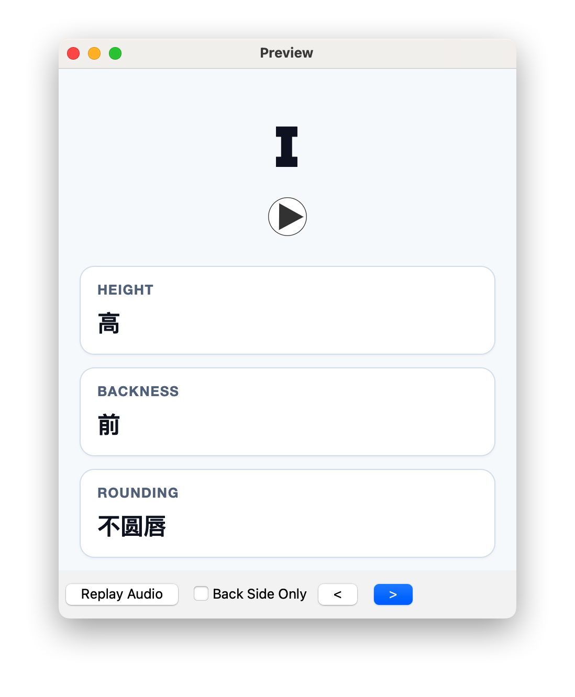

01 / EARS
/ɪ/ ≠ /i/
耳朵：先判断，再核对
用最小对立体练习听辨：两个词只差一个声音。听完先选答案，再根据反馈重听，留意刚才忽略的差别。
试一组听辨Fluent Forever 将发音学习分为耳朵、嘴巴和文字三类训练。把它们放在一起练，让读过的词也能被听懂、说出来。
把音频、音标和发音线索放进卡片。
一次只做一件事：听、判断，或者回忆。
看音标、听声音，再观察舌位高低、前后位置和圆唇度。让一个抽象的符号，对应到能感受到的发音动作。
先听再模仿；遇到不确定的声音，再回来看这些线索。

音标是发音线索，具体音质仍要结合音频。不同词典可能使用 /i/ 或 /iː/ 等不同记法。
154 条笔记，生成四类练习卡片。
安装并打开 Anki，选择「导入文件」，找到下载的 .apkg 文件，确认后导入。初次使用他人分享的卡组时，不勾选「导入学习进度」，按自己的节奏开始复习。
不需要。截图中的间隔来自当时的个人复习情况。先独立回答，再查看答案，根据这一次的真实表现评分，交给 Anki 安排后续复习。
播放卡片音频，选择听到的词或声音。先给出答案，再翻面核对。
选错了就比较两边的声音；发不出来，就结合图解调整口腔动作。
按 Anki 的安排回来复习，也在新单词、不同说话者的录音中留意这些声音。